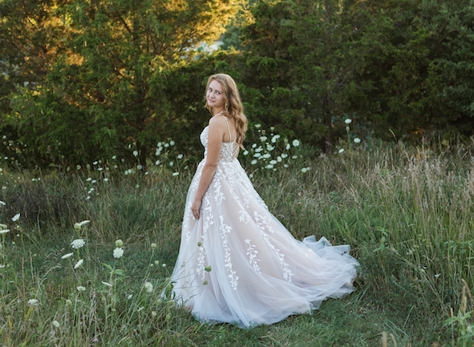

About Me
My name is Natasha Schartner. I was born on March 12th in Windsor, Ontario. I grew up in Leamington Ontario with my parents and sister Raylene. I attended high school at UMEI and graduated in 2020. I decided to attend the Algonquin College, IMD program as I have always loved design.
I have no experience in webdesign, or coding. I was nervous entering this course, due to my complete lack of experience. In the other cousers this program provides I have much more experience. I worked on a robotics team in high school as the PR representative. I learned a lot from this time and it inspired me to try this program.
Hobbies
- roller-blading
- ice-skating
- painting with oils
- running track and field